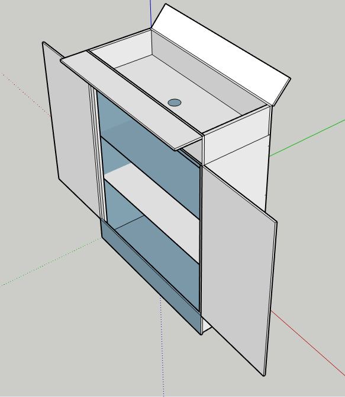

Prototypage
(par Mathieu Cadran)
Dès lors, je me suis positionné sur le projet, étant passionné de hardware. Le principal problème que j'ai rencontré fut le risque de surchauffe, dû au confinement des composants. Pour pallier à ce problème, un test a consisté à faire un certain nombre de clonages avec les tours d'origine, positionnées dans le meuble. Une centaine de disques ont été clonés en 1 mois dans ces conditions, et en utilisation, nous avons un delta T de 10°c. (différence de chaleur entre la température extérieure et intérieure, en l’occurrence, 10 degrés de plus à l'intérieur.)

Réalisation
Étape 1:
L’ossature interne qui supportera le tout.
J'ai utilisé des rails de placo coupés en 2 dimensions distinctes, utilisant les chutes pour créer des cales. J'ai donc créé 9 emplacements réservés :
- 3 pour les cartes mères.
- 3 pour les blocs d'alimentation.
- 3 pour les disques durs.
Pour éviter les risques de court-circuit entre les soudures des cartes mères et les rails de placo, j’ai fixé des morceaux de mousse isolante entre ceux-ci.
Étape 2:
Ergonomie.
Afin d'éviter tout contact avec l'intérieur du meuble, le bouton d'alimentation, les témoins, ainsi que les branchement USB et SATA ont été prolongés pour permettre leur usage à l'extérieur de l'armoire.
Étape 3:
Positionnement des écrans.
Je suis parti sur un système de pieds fait maison, composés de rails de placo et chevrons de bois. Ceci permet une bonne rigidité, une fixation sur l'arrière de l’armoire et de les enlever au besoin.
Étape 4:
Les possibilités d'utilisations.
Une fois finie, l'armoire peut permettre plusieurs types d'usages :
- La réparation de disques durs. (DOSFSCK/CHKDSK)
- Le clonage de disques ou de partitions simultanément. (CLONEZILLA/DD)
- La purge de disques par réécriture. (DBAN/SHRED)
- La récupération de données. (TESTDISK)